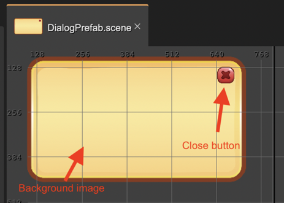
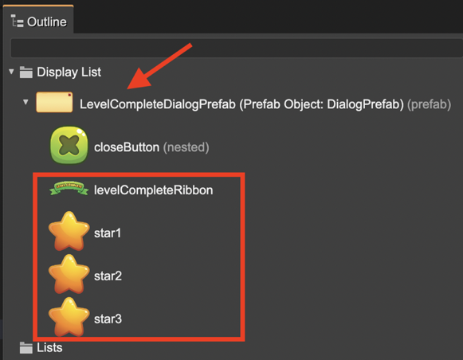
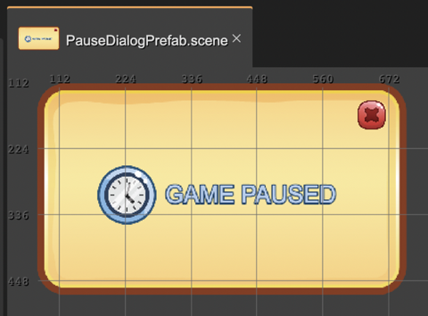

Adding children to a prefab instance
Since v3.35.0 of Phaser Editor 2D you can add children to a prefab instance. Sure, it should be an instance of a Layer or Container prefab.
For backward compatibility, this behavior is disabled by default in prefabs. You should enable it in the Children properties section, setting on the Allow Append Children parameter. It means you have to checkmark that parameter in a Container or Layer prefab or nested prefab.
This is a handy feature for creating reusable objects. Let’s see the next example.
We want to create a reusable dialog object that we can use for showing Level Complete dialog or a Game Paused dialog.
We create a DialogPrefab with a basic structure: a background image and a close button. In addition to the structure, it also has a basic behavior: it animates from the bottom of the screen and if you click the close button it closes the dialog:
Some considerations:
For allowing adding new children to the prefab instances, we should check the Allow Append Children parameter we mentioned before.
Maybe we want to change the texture of the close button in prefab instances, so we make it a nested prefab.
Now let’s create the LevelCompleteDialogPrefab. It is a new prefab that is a variant of the DialogPrefab. It means, the LevelCompleteDialogPrefab class extends the DialogPrefab class. In this new dialog, we add the Level Complete message and three reward stars and change the texture of the close button (to green).
Notice the new levelCompleteRibbon, and the star1, star2, and star3 objects, are children of an instance of the DialogPrefab prefab. In previous versions of the editor, for getting a similar structure, you had to wrap a DialogPrefab with a new container and add the new objects to it. But now, you can add new children to the same prefab instance and at the same time, it inherits the behaviors of the DialogPrefab. It doesn’t require any manual delegation of behaviors.
As result, we get the following code of the LevelCompletePrefab class:
class LevelCompleteDialogPrefab extends DialogPrefab {
constructor(scene: Phaser.Scene, x?: number, y?: number) {
super(scene, x ?? 400, y ?? 303);
this.closeButton.setTexture("Button Pack - Green_Button Green - Close");
// levelCompleteRibbon
const levelCompleteRibbon = scene.add.image(0, -30, "Casual Game GUI_Attribute - Ribbon Green");
levelCompleteRibbon.scaleX = 0.5;
levelCompleteRibbon.scaleY = 0.5;
this.add(levelCompleteRibbon);
// star1
const star1 = scene.add.image(-89, 81, "Casual Game GUI_Icon - Star Yellow");
star1.scaleX = 0.5;
star1.scaleY = 0.5;
star1.angle = -10;
this.add(star1);
// star2
const star2 = scene.add.image(-2, 71, "Casual Game GUI_Icon - Star Yellow");
star2.scaleX = 0.5;
star2.scaleY = 0.5;
this.add(star2);
// star3
const star3 = scene.add.image(85, 81, "Casual Game GUI_Icon - Star Yellow");
star3.scaleX = 0.5;
star3.scaleY = 0.5;
star3.angle = 10;
this.add(star3);
}
}
Following the same pattern then we can create a PauseDialogPrefab:
